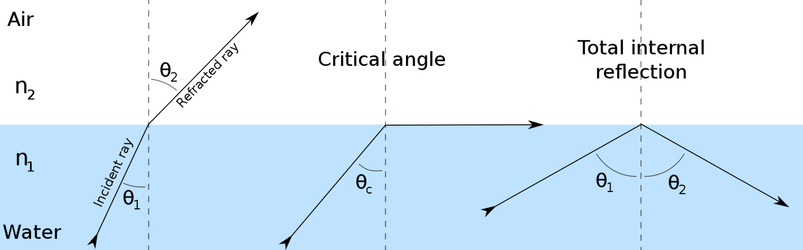

snell's law
Last modified: 2023-07-10
Table of Contents
- Snell’s law can determine the angle of refraction.
- Using the angle of incidence and a materials’ refractive indexes, the angle of refraction can be determined, and vice versa.
- Instead of the refractive index, you could use the velocity of the wave in a substance.
\[\frac{\sin \theta_{1}}{\sin \theta_{2}}=\frac{n_{2}}{n_{1}}=\frac{v_{1}}{v_{2}}\]
- Can be understood through huygen’s principle. Since the wavelets propagate slower through a slower medium (by definition), and so the distance between wavefronts is also smaller, but if that happens mid-way through a medium change, the angle changes.
- If the sin(angle of refraction) > 1, then obviously it is not possible. This means that all of the light was reflected. So yeah, it doesn’t actually break it.
- 
found on spicata.99000000.xyz. no rights reserved.
published by 99 000 000.xyz.